NOISE LEVEL STUDIOS
About Noise Level
Noise Level Studios is an indie game studio out of Brock University, led and staffed by a team of 21 Interactive Arts and Science students!
Noise Level Studios is currently developing Fish n' Guppies, a single-player underwater puzzle adventure. Players take on the role of Finley- a young merfolk shepherd- trying to rid their home and farm of a sudden pollution onslaught. They must work with three animal companions to solve environmental puzzles and save their home from pollution, and the Diver that brings it!
Blending a fanciful, slow-paced underwater world with a message about how human interference affects the ocean in our real life, Fish n Guppies is sure to deliver a delightful gaming experience- and leave you thinking about the state of our Earth's oceans. But overall, with fond memories of Finley and their journey.
We hope that you come and swim with us! Come and swim with us!
THE PEOPLE BEHIND THE GAME
Meet the Crew
Meet the creative minds working together to bring Fish & Guppy to life.
01 / STUDIO
Studio Leadership
The people guiding Noise Level Studios.
02 / LEADERSHIP
Department Leads
The people leading our different areas of game development.
03 / DEVELOPMENT
Our Team
The artists, programmers, designers, storytellers, and creators behind the game.
WHAT DRIVES US
Our Vision
We aim to create memorable game experiences through creativity, collaboration, exploration, and storytelling.